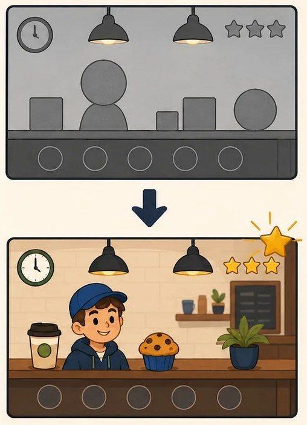
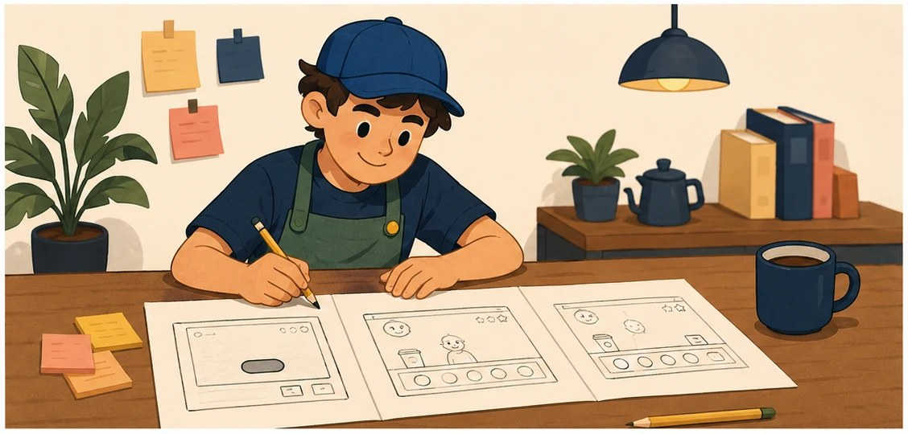

Rakennat Unityllä koulun kahvilapelin, jota pelataan selaimessa ilman asennusta. Pelaaja palvelee tiskille saapuvia asiakkaita: hän toimittaa 1–3 tuotteen tilauksia kellon käydessä, kiire kasvaa pisteiden mukana, ja parhaat tulokset jäävät top 5 -listalle.
Sinä päätät pelin säännöt, kirjoitat C#-koodin täydennettävät kohdat itse ja testaat pelin selainversiolla. Asiakkaan päätettävät asiat sovit hänen kanssaan, ja asiakas kokeilee peliä viikolla 2. Julkaisuehdokkaan testaa viikolla 3 uusi pelaaja.
Näin käytät viikko-ohjetta
Lue viikon alusta viikon tavoite ja se, miten viikon asiat liittyvät kokonaisprojektiin.
Tee viikon 2–4 työvaihetta järjestyksessä. Ensimmäinen keskeneräinen työvaihe on auki. Rastita osatehtävä heti, kun olet tehnyt sen. Jos jäät jumiin, avaa työvaiheen kohta Tarvitsen apua tähän työvaiheeseen. Kokeile ensin itse.
Kun teet muutoksen peliin, kirjaa se GitHub-issueksi ja tee se Työtapa-sivun kuudella askeleella. Kun issue on valmis, lisää siihen kommentti ja linkki commitiin eli versionhallintaan tallennettuun muutokseen.
Tarkista työvaiheen Valmis kun ja Tallenna työnäyte ennen seuraavaa työvaihetta. Tee viikon lopussa viikon lopputarkistus.
Täytä projektipäiväkirjan kolme kenttää. Paina Lataa koko projektipäiväkirja, korvaa Git-repositoryn eli projektin koodivaraston tiedosto project-docs/projektipaivakirja.md ja tee commit ja push.
Työvaihe on tämän sivun viikko-ohjeen kohta, esimerkiksi ”Työvaihe 2 / 5”. GitHub-issue on yksi rajattu muutos peliin: tavoite, arvio ja Valmis kun -ehto. Issue on yleensä puolen tai yhden päivän työ, ja yksi työvaihe voi sisältää useita issueita. Työtapa on Työtapa-sivun kuusi askelta, joilla teet yhden issuen: valitse, suunnittele, toteuta, testaa, tallenna ja kirjaa.
Aloita viikosta 48 →Pelin osat ja työkalutHavainnekuva KahvilaKoodin osista. Se ei ole kuvakaappaus Unitysta eikä valmiista pelistä.
Unity ja CafeGame-scene
Koko peli on yhdessä scenessä eli Unityn näkymätiedostossa Assets/Scenes/CafeGame.unity. Käytä oppilaitoksen sopimaa Unity-versiota ja Universal 2D -pohjaa koko projektin ajan. Play Mode kokeilee peliä editorissa, Build And Run selaimessa.
Canvas, TextMeshPro ja Inspector
Canvas on käyttöliittymän alue, jolla ovat pelin kolme ruutua: MenuPanel, GamePanel ja ResultPanel. Tekstit ja painikkeet tehdään TextMeshProlla. Inspectorissa kytket painikkeet skriptien metodeihin ja raahaat objektit skriptien kenttiin.
C#-skriptit (Assets/Scripts)
GameManager hoitaa ruudut, ajan ja pisteet, OrderManager tilauksen ja toimituksen tarkistuksen, ProductDatabase lukee tuotteet, DifficultyController kertoo vaikeustason (viikko 52) ja SaveService tallentaa top 5 -listan (viikko 53). Toteutusavun työpohjat antavat rungon, ja täydennettävät kohdat kirjoitat itse.
Tuotteet: Assets/Data/products.json
Tuotteet ja niiden pisteet ovat JSON-tiedostossa. JSON on tekstimuoto, jossa tieto on nimi–arvo-pareina. Tuotteita voi muuttaa koskematta C#-koodiin, kuten toimeksianto vaatii.
Tulokset: PlayerPrefs
Viiden parhaan tuloksen lista tallentuu PlayerPrefsillä selaimen muistiin. Tieto säilyy vain siinä selaimessa, jossa peliä pelattiin.
Git, GitHub Desktop ja GitHub
Repositoryssa ovat kansiot Assets, Packages, ProjectSettings ja project-docs. GitHubissa ovat myös issuet ja niiden labelit, haara ja pull request (viikko 2), tagit RC1 ja v1.0 sekä julkaisu. GitHub Desktopin asennus, kirjautuminen, kloonaus, commit ja push kuvineen: GitHub Desktop -kuvaohje.
Julkaisu: WebGL ja GitHub Pages
WebGL on Unityn julkaisumuoto, joka toimii selaimessa ilman asennusta. Viikolla 3 teet WebGL-buildin repositoryn docs-kansioon, ja GitHub Pages julkaisee sen linkkinä, jonka asiakas voi avata. Älä luo docs-kansiota ennen sitä.
VS Code ja grafiikkapaketit
VS Codella muokkaat products.json- ja README-tiedostoja. Väliaikainen grafiikka riittää pitkälle. Käytetyt grafiikkapaketit ja niiden lisenssit kirjataan README:hen.
Tekoäly
Saa selittää, ehdottaa ja auttaa virheiden etsinnässä. Päätät pelin säännöistä, teet omat ratkaisusi, testaat pelin ja kirjoitat itsearvioinnin itse. Merkittävä käyttö kirjataan AI-lokiin.
Mihin kirjoitan mitäkin?
Toimeksianto
Asiakkaan vaatimukset, sovittu toteutustapa ja rajaus. Tästä tarkistat, mitä peliin pitää tehdä.
GDD eli pelin suunnitteludokumentti (project-docs/gdd.md)
Pelin konsepti, omat suunnittelupäätökset perusteluineen ja asiakkaan kanssa sovittavat asiat. GDD (Game Design Document) täytetään Suunnitelma (GDD) -näkymässä ja ladataan repositoryyn. Viikolla 48 täydennät sitä asiakkaan vastauksilla. Päivitä se, kun asiakas vastaa avoimeen asiaan.
GitHub-issue
Yhden muutoksen tavoite, arvio, Valmis kun -ehto ja tärkeysluokka. Kun issue on valmis, lisää siihen kommentti ja linkki commitiin ennen sulkemista.
Commit ja haara
Itse muutos peliin. Commit-viesti kertoo, mitä muutit ja miksi.
Kuvat ja videot: project-docs/evidence/week-N/
Kuvakaappaukset ja videot työnäytteinä, esimerkiksi mockup.png ja hierarchy.png. Kansion nimessä on viikon numero.
Testaustaulukko: project-docs/testaus.md
Viikosta 1 alkaen testitapaukset odotettuine ja toteutuneine tuloksineen. Sitä ennen kokeilut kirjataan päiväkirjaan.
README.md
Pelin kuvaus, käyttöohje, julkaisulinkki, tunnetut puutteet sekä lähteet ja lisenssit.
Projektipäiväkirja
Viikon yhteenveto, testien tulokset, asiakkaan vastaukset, muistiot ja linkit työnäytteisiin. Viikon lopussa vastaat kolmeen kysymykseen: mitä tein ja miten, miksi tein näin ja missä työnäyte on. Lataat tiedoston ja viet sen polkuun project-docs/projektipaivakirja.md.
AI-loki
Mitä kysyit tekoälyltä ja mitä teit vastauksella: käytit, muutit tai hylkäsit. Loki tulee mukaan päiväkirjan lataukseen.
Jokaista vaatimusta kohti rivi: vaatimuksen tunnus, työnäytteen linkki (commit, issue, tiedosto, tagi tai kuva) ja viikko. Sama työnäyte saa olla usealla rivillä. Perustat ja täytät tiedoston viikolla 4. Sivun Näyttömatriisi-näkymän rastit ovat oma muistilistasi.
Et täytä samoja asioita erilliseen Word-pohjaan. Sivuston rastit ja kentät tallentuvat vain tähän selaimeen: rasti ei ole palautus, ja työnäyte on aina Git-repositoryssa. Henkilöistä kirjataan repositoryyn vain rooli, esimerkiksi ohjaaja, asiakkaan edustaja tai testaaja A. Nimet ja sanatarkat lausumat lähetät tarvittaessa ohjaajalle Teamsissa.
Vaatimus, ehdotus vai oma päätös?
Vaatimus tulee asiakkaan toimeksiannosta, ja se toteutetaan aina: aloitusvalikko, itse peli, pistelasku ja päättymisnäkymä, 1–3 tuotteen tilaus, kasvava vaikeus, parhaiden tulosten tallennus, tuotteet erillisessä tietolähteessä, toimiva väliversio asiakkaalle ja julkaistu peli, jota asiakas voi itse kokeilla. Yhdessä ne ovat pakollinen perusversio (P0). Tärkeä jatko (P1) tehdään vasta, kun koko P0 toimii, ja valinnainen lisä (P2) saa jäädä pois.
Sovittu toteutustapa on toimeksiannon ja GDD:n teknologiaosion tekniikka: Unity 2D ja C#, yksi CafeGame-scene, tuotteet products.json-tiedostossa, tulokset PlayerPrefsillä ja julkaisu WebGL-buildina GitHub Pagesiin. Tietovarasto on sovittu toteutustapa: tuotteet luetaan products.json-tiedostosta JsonUtilityllä ja tulokset tallennetaan PlayerPrefsillä, koska myöhemmät viikot rakentuvat niiden varaan. Viikolla 53 perustelet PlayerPrefsin valinnan vertaamalla sitä vähintään yhteen vaihtoehtoon. Jos vertailu puoltaa selvästi muuta, poikkeamasta sovitaan ohjaajan kanssa tiistaina 12.1., ja siihen asti pidät PlayerPrefsin. Ehdotus on esimerkki tai oletusarvo, jonka voit vaihtaa perustellusti, esimerkiksi 10 pistettä oikeasta toimituksesta, vaikeustasojen rajat 0, 31 ja 61 pistettä tai nimimerkin 12 merkin enimmäispituus. Toteutusavun työpohjat ovat valmis runko: täydennät kohdat itse ja osaat selittää jokaisen rivin.
Oma päätös perustellaan GDD:ssä tai päiväkirjassa: pelin nimi, tyyli, grafiikka ja pisteytys (GDD), pelisäännöt (viikko 51), vaikeutustapa ja tasojen arvot (viikko 52), nimimerkin enimmäispituus (viikko 53) ja se, mitkä testaajan havainnot korjataan ennen julkaisua (viikko 3).
Asiakkaan kanssa sovittavat asiat ovat toimeksiannon Sovi asiakkaan kanssa -laatikossa ja GDD:n ASIAKAS-kentissä: kierroksen pituus, testiselaimet ja -laitteet, kohderyhmä, top 5 -listan tasatilanteet ja se, kuka hyväksyy rajauksen ja väliversion. Ohjaajan kanssa: Kunnes asiakkaan ulkopuolinen edustaja on nimetty, ohjaava opettaja toimii asiakkaan sijaisena ja vastaanottaa kysymyslistat ja tilannekatsaukset. Katselmoinnissa (viikko 2) asiakasta esittää nimetty edustaja. Ohjaaja hyväksyy rajauksen viikolla 48. Ohjaaja ja asiakas eivät ole tavoitettavissa 18.12.2026–11.1.2027. Älä keksi vastausta itse tai tekoälyllä: tyhjä kenttä on oikea tulos, kunnes asia on sovittu.
Projekti kattaa kolme tutkinnon osaa: Ohjelmointi (11 osaamisvaatimusta), Ohjelmistokehittäjänä toimiminen (14) ja Ohjelmiston toteuttaminen ohjelmistokomponenttikirjastolla (7). Näyttömatriisissa on kaikki 32 vaatimusta. Jokaisen tarkka työnäytelinkki kirjataan tiedostoon project-docs/nayttomatriisi.md, jonka perustat ja täytät viikolla 4.
Ohjelmoinnin osaaminen näkyy C#-koodissa, jonka kirjoitat, testaat ja korjaat itse: tilauksessa, pisteissä, ajassa, vaikeudessa ja tallennuksessa sekä virheenkorjausketjuissa. Ohjelmistokehittäjänä toimiminen on työtapa: selvität asiakkaan tarpeen, pilkot ja priorisoit työn GitHub-issueiksi, katselmoit version asiakkaan kanssa, teet muutoksen haarassa ja julkaiset pelin. Komponenttikirjasto-osassa kirjasto on Unity: rakennat käyttöliittymän Canvasille, kytket osat Inspectorissa, otat ulkoiset komponentit (TextMeshPro ja grafiikkapaketit) käyttöön lisensseineen ja julkaiset WebGL-buildin.
Tutkinnon osissa on tiimissä tehtäviä kokonaisuuksia. Siksi työvaiheissa ovat mukana asiakas, vertainen ja ohjaaja, vaikka teet pelin muuten yksin. Katselmoinnit ja sopimiset ovat osa arvioitavaa osaamista.
Muista: sivuston rastit ja kirjoituskentät ovat oma työmuistisi. Ne tallentuvat vain tähän selaimeen, eivätkä ne siirry opettajalle. Rasti ei ole palautus eikä osa näyttöaineistoa. Työvaihe on valmis vasta, kun sen Valmis kun -ehto täyttyy ja työnäyte on Git-repositoryssa.
Mitä paperinen työpaketti ja alkuperäinen Word-pohja tekevät?
Paperinen työpaketti on aikataulu ja tarkistuslista tilanteisiin, joissa sivu ei ole auki. Siihen ei tarvitse kirjoittaa samoja vastauksia uudelleen.
Alkuperäinen Word-pohja on tämän pelipolun lähdeaineisto. Sen aiheet on tuotu sivuston viikkojen työvaiheisiin ja projektipäiväkirjaan. Täytä Word-pohja erikseen vain, jos opettaja antaa siitä erillisen palautusohjeen.
Opiskelijan oma tila selaimessa
Rastit, päiväkirja, GDD ja AI-loki tallentuvat vain tähän selaimeen.
Opettajan lähdeaineisto · ei erillistä täyttämistä ilman ohjetta
Nämä ovat opettajan lähdeaineistoa. Opiskelija ei täytä niitä ilman erillistä ohjetta. Viikkojen työvaiheet, GDD ja projektipäiväkirja kattavat saman sisällön.
Alkuperäinen asiakastoimeksianto · annettu 19.10.2026
Koulun kahvilapeli
Haluan pienen PC:llä tai selaimessa toimivan pelin, jossa pelaaja työskentelee koulun kahvilassa. Asiakkaita saapuu tiskille ja he tilaavat 1–3 tuotetta. Pelaajan tehtävänä on toimittaa oikea tilaus mahdollisimman nopeasti.
Pelissä pitää olla aloitusvalikko, itse peli, pistelasku ja pelin päättymisnäkymä. Vaikeustason pitää kasvaa pelin edetessä. Pelaajan parhaat tulokset pitää tallentaa.
Tuotteiden tiedot eivät saa olla kovakoodattuina pelilogiikkaan, vaan niiden pitää tulla erillisestä tietolähteestä. Haluan myös nähdä pelistä toimivan version vähintään kerran ennen lopullista versiota, jotta voin pyytää muutoksia.
Lopullinen peli pitää julkaista niin, että voin itse kokeilla sitä.
Näin luet tätä sivua:vaatimus on asiakkaan toive, joka toteutetaan aina. Sovittu toteutustapa on tämän polun tekniikka, jolla vaatimukset tehdään. Oma päätös tehdään ja perustellaan GDD:ssä eli pelin suunnitteludokumentissa. Sovi asiakkaan kanssa -kohdat päättää asiakas: kirjaa vastaus tai jätä kohta avoimeksi.
Vaatimus · toimeksiannosta, toteutetaan aina
Peli toimii PC:llä tai selaimessa. Tässä polussa toteutus on selainpeli.
Asiakkaita saapuu tiskille, ja he tilaavat 1–3 tuotetta. Pelaaja toimittaa oikean tilauksen mahdollisimman nopeasti.
Pelissä on aloitusvalikko, itse peli, pistelasku ja pelin päättymisnäkymä.
Vaikeustaso kasvaa pelin edetessä.
Pelaajan parhaat tulokset tallennetaan.
Tuotteiden tiedot tulevat erillisestä tietolähteestä, eivät pelilogiikan koodista.
Asiakas näkee toimivan version vähintään kerran ennen lopullista versiota (viikko 2).
Lopullinen peli julkaistaan niin, että asiakas voi itse kokeilla sitä (viikko 3).
Yhdessä nämä ovat pakollinen perusversio (P0).
Sovittu toteutustapa · tämän polun tekniikka
Unity 2D + C#
yksi CafeGame-scene eli pelin työtila
Canvas eli käyttöliittymän (UI) alue: MenuPanel, GamePanel ja ResultPanel
tuotteet erillisessä JSON-tiedostossa – JSON on tekstimuoto, jossa tieto on nimi–arvo-pareina
viiden parhaan tuloksen lista kuuluu P0:aan eli pakolliseen perusversioon
lopuksi Unity WebGL -build GitHub Pagesiin eli GitHubin ilmaiseen sivustojulkaisuun
WebGL on Unityn julkaisumuoto, joka toimii selaimessa ilman asennusta, ja build on Unityn tekemä ajettava versio pelistä. WebGL-build on siis selaimessa pelattava julkaisuversio.
Toimeksianto sallii PC-pelin tai selainpelin. Tässä polussa toteutetaan selainpeli. Käytä oppilaitoksen määrittämää Unity-versiota koko projektin ajan.
Tietovarasto on sovittu toteutustapa: tuotteet luetaan products.json-tiedostosta JsonUtilityllä ja tulokset tallennetaan PlayerPrefsillä, koska myöhemmät viikot rakentuvat niiden varaan. Viikolla 53 perustelet PlayerPrefsin valinnan vertaamalla sitä vähintään yhteen vaihtoehtoon. Jos vertailu puoltaa selvästi muuta, poikkeamasta sovitaan ohjaajan kanssa tiistaina 12.1., ja siihen asti pidät PlayerPrefsin.
Pidä rajaus · sovittu, ei toteuteta
Tee ensin toimiva P0-versio. P0 tarkoittaa projektin pakollista ydintä: niitä ominaisuuksia, joiden on valmistuttava ennen mitään lisäominaisuuksia.
Ei verkkomoninpeliä.
Ei käyttäjätilejä.
Ei oikeita maksuja.
Ei laajaa 3D-maailmaa.
Sovi asiakkaan kanssa · asiakas päättää
Millä selaimilla ja laitteilla WebGL-versio testataan?
Kenelle peli tehdään ja kuinka pitkä yksi kierros on?
Miten viiden parhaan tuloksen tasatilanteet järjestetään?
Kuka hyväksyy rajauksen ja väliversion?
Älä keksi vastauksia itse tai tekoälyllä. Merkitse vastaamattomat kohdat avoimiksi.
Kunnes asiakkaan ulkopuolinen edustaja on nimetty, ohjaava opettaja toimii asiakkaan sijaisena ja vastaanottaa kysymyslistat ja tilannekatsaukset. Katselmoinnissa (viikko 2) asiakasta esittää nimetty edustaja. Ohjaaja ja asiakas eivät ole tavoitettavissa 18.12.2026–11.1.2027.

Mistä hahmot ja taustat? Väliaikainen grafiikka riittää pitkälle: rakenna featuret eli pelin yksittäiset ominaisuudet ensin ja vaihda lopullinen grafiikka vasta viimeistelyviikoilla.
Grafiikan lähteet
Kenney.nl — hahmot, esineet ja käyttöliittymäelementit, CC0 (saa käyttää vapaasti)
itch.io — ilmaisia assetteja eli valmiita kuva- ja äänitiedostoja, tarkista lisenssi
Piskel — piirrä omat spritet eli pelin kuvatiedostot selaimessa
Kirjaa käytetyt paketit ja lisenssit README:hen. Tekoälyllä tuotettu grafiikka: kirjaa AI-lokiin ja tarkista lisenssi sekä oppilaitoksen linja.
Työtapa · yksi GitHub-issue kerrallaan
Kuusi askelta joka kerralla
Työtapa kertoo, miten teet yhden GitHub-issuen eli yhden rajatun muutoksen peliin. Viikon työvaihe kertoo, mitä teet, ja nämä kuusi askelta, miten teet jokaisen muutoksen. Kun issue on valmis, palaa viikon työvaiheeseen.
1Valitseyksi GitHub-issue
2Suunnittelemuutos ja testi
3Toteutapala kerrallaan
4Testaamyös reunatapaus
5Tallennacommit ja push
6Kirjaaissueen ja päiväkirjaan
Nyrkkisääntö: jos et pysty selittämään muutosta, työ ei ole vielä valmis.
Testi on valmis vasta onnistuneen uusintatestin jälkeen.
Testaa kuin kehittäjä
Testaus ei ole pelkkää pelaamista. Kirjaa odotettu tulos, havaittu tulos, virheen syy, korjaus ja uusintatesti. Numeroi testitapaukset juoksevasti: T01 on ensimmäinen testitapaus, T02 toinen.
Vähintään 9 suunniteltua testitapausta
2 täydellistä virheenkorjausketjua aidoista havainnoista tai opettajan merkityistä vikatehtävistä
Valikot, tilaus, pisteet, aika, vaikeus ja tallennus
Puuttuva tai virheellinen JSON ja tyhjä tallennus
Julkaistu versio toisella laitteella tai selaimella
Jokainen termi selitetään myös siinä kohdassa, jossa se tulee ensimmäisen kerran vastaan. Tänne voit palata, kun tunnus tai lyhenne unohtuu. Sanastossa ovat vain ne termit, joita tässä projektissa oikeasti käytetään.
Julkaistut työt
Galleria
Valmiit v1.0-julkaisut nostetaan tänne viikolla 3: pelin nimi, kuvakaappaus, lisenssi ja julkaisulinkki.
Ensimmäiset pelit julkaistaan viikolla 3.
Vaihe 1 · Valmistelu · Vko 48 · 23.–27.11.
Aloitus: Unity-projekti ja asiakkaan kysymykset
Viikon jälkeen
Toimeksiannosta – tätä asiakkaan toivetta tämä viikko toteuttaa
Tällä viikolla valmistuu
Miksi tämä tehdään
Viikon tekniikka
Viikon työvaiheet
0 / 4
Näin etenet
ohjattu työ · tee järjestyksessä
1Askel. Ohje.
Tarvitsen toteutusapuaavaa vain, jos jäät jumiin – kokeile ensin itse
Viikon päivärytmi
Valmis kun
Ennen kuin jatkat: tarkista viikon valmis kun -ehto.
Näytä
Työnäyte Git-repositoryyn ennen rastia: Unity-projekti GitHubissa, selainkuva web-test.png, kysymykset ja asiakkaan vastaukset päiväkirjassa, päivitetty gdd.md ja GitHubin Issues-lista.
Viikon projektipäiväkirja
Tämä on päiväkirjan ainoa kirjoituspaikka: kolme kysymystä viikon lopussa. Kentät tallentuvat vain tähän selaimeen.
Ei vielä kirjattu
Vaihe 2 · Pelattava peli · Vko 49 · 30.11.–4.12.
Feature 1 · Pelattava kierros
Viikon jälkeen
Toimeksiannosta – tätä asiakkaan toivetta tämä viikko toteuttaa
Tällä viikolla valmistuu
Miksi tämä tehdään
Viikon tekniikka
Viikon työvaiheet
0 / 4
Näin etenet
ohjattu työ · tee järjestyksessä
1Askel. Ohje.
Tarvitsen toteutusapuaavaa vain, jos jäät jumiin – kokeile ensin itse
Viikon päivärytmi
Valmis kun
Ennen kuin jatkat: tarkista viikon valmis kun -ehto.
Näytä
Työnäyte Git-repositoryyn ennen rastia: Luonnos mockup.png, kuva Hierarchy-ikkunasta, kaksi selainkokeilua päiväkirjassa ja commit-linkit.
Viikon projektipäiväkirja
Tämä on päiväkirjan ainoa kirjoituspaikka: kolme kysymystä viikon lopussa. Kentät tallentuvat vain tähän selaimeen.
Ei vielä kirjattu
Vaihe 2 · Pelattava peli · Vko 50 · 7.–11.12.
Feature 2 · Kahvilan tuotelista
Viikon jälkeen
Toimeksiannosta – tätä asiakkaan toivetta tämä viikko toteuttaa
Tällä viikolla valmistuu
Miksi tämä tehdään
Viikon tekniikka
Viikon työvaiheet
0 / 4
Näin etenet
ohjattu työ · tee järjestyksessä
1Askel. Ohje.
Tarvitsen toteutusapuaavaa vain, jos jäät jumiin – kokeile ensin itse
Viikon päivärytmi
Valmis kun
Ennen kuin jatkat: tarkista viikon valmis kun -ehto.
Näytä
Työnäyte Git-repositoryyn ennen rastia: products.json, ProductDatabase- ja OrderManager-skriptit commiteina sekä tiedon kulku päiväkirjassa.
Viikon projektipäiväkirja
Tämä on päiväkirjan ainoa kirjoituspaikka: kolme kysymystä viikon lopussa. Kentät tallentuvat vain tähän selaimeen.
Ei vielä kirjattu
Vaihe 2 · Pelattava peli · Vko 51 · 14.–18.12.
Feature 3 · Kello ja pisteet
Viikon jälkeen
Toimeksiannosta – tätä asiakkaan toivetta tämä viikko toteuttaa
Tällä viikolla valmistuu
Miksi tämä tehdään
Viikon tekniikka
Viikon työvaiheet
0 / 3
Näin etenet
ohjattu työ · tee järjestyksessä
1Askel. Ohje.
Tarvitsen toteutusapuaavaa vain, jos jäät jumiin – kokeile ensin itse
Viikon päivärytmi
Valmis kun
Ennen kuin jatkat: tarkista viikon valmis kun -ehto.
Näytä
Työnäyte Git-repositoryyn ennen rastia: Lomaviikkojen suunnitelma ja säännöt päiväkirjassa, kuvat oikean ja väärän toimituksen palautteesta ja commit-linkit.
Viikon projektipäiväkirja
Tämä on päiväkirjan ainoa kirjoituspaikka: kolme kysymystä viikon lopussa. Kentät tallentuvat vain tähän selaimeen.
Ei vielä kirjattu
Vaihe 2 · Pelattava peli · Vko 52 · 21.–23.12.
Feature 4 · Kasvava kiire
Viikon jälkeen
Toimeksiannosta – tätä asiakkaan toivetta tämä viikko toteuttaa
Tällä viikolla valmistuu
Miksi tämä tehdään
Viikon tekniikka
Viikon työvaiheet
0 / 2
Näin etenet
ohjattu työ · tee järjestyksessä
1Askel. Ohje.
Tarvitsen toteutusapuaavaa vain, jos jäät jumiin – kokeile ensin itse
Viikon päivärytmi
Valmis kun
Ennen kuin jatkat: tarkista viikon valmis kun -ehto.
Näytä
Työnäyte Git-repositoryyn ennen rastia: Valinta perusteluineen päiväkirjassa, tasojen arvot ja commit-linkki.
Viikon projektipäiväkirja
Tämä on päiväkirjan ainoa kirjoituspaikka: kolme kysymystä viikon lopussa. Kentät tallentuvat vain tähän selaimeen.
Ei vielä kirjattu
Vaihe 2 · Pelattava peli · Vko 53 · 28.–31.12.
Feature 5 · Top 5 -lista
Viikon jälkeen
Toimeksiannosta – tätä asiakkaan toivetta tämä viikko toteuttaa
Tällä viikolla valmistuu
Miksi tämä tehdään
Viikon tekniikka
Viikon työvaiheet
0 / 4
Näin etenet
ohjattu työ · tee järjestyksessä
1Askel. Ohje.
Tarvitsen toteutusapuaavaa vain, jos jäät jumiin – kokeile ensin itse
Viikon päivärytmi
Valmis kun
Ennen kuin jatkat: tarkista viikon valmis kun -ehto.
Näytä
Työnäyte Git-repositoryyn ennen rastia: Kuva tulosruudun listasta, tallennusratkaisun perustelu ja tietoturvakirjaus päiväkirjassa sekä commit-linkit.
Viikon projektipäiväkirja
Tämä on päiväkirjan ainoa kirjoituspaikka: kolme kysymystä viikon lopussa. Kentät tallentuvat vain tähän selaimeen.
Ei vielä kirjattu
Vaihe 3 · Testaus ja palaute · Vko 1 · 4.–8.1.
Peli kestää pelaamista: testaus
Viikon jälkeen
Toimeksiannosta – tätä asiakkaan toivetta tämä viikko toteuttaa
Tällä viikolla valmistuu
Miksi tämä tehdään
Viikon tekniikka
Viikon työvaiheet
0 / 3
Näin etenet
ohjattu työ · tee järjestyksessä
1Askel. Ohje.
Tarvitsen toteutusapuaavaa vain, jos jäät jumiin – kokeile ensin itse
Viikon päivärytmi
Valmis kun
Ennen kuin jatkat: tarkista viikon valmis kun -ehto.
Näytä
Työnäyte Git-repositoryyn ennen rastia: project-docs/testaus.md yhdeksällä testitapauksella ja kuvat luonnosvertailusta.
Viikon projektipäiväkirja
Tämä on päiväkirjan ainoa kirjoituspaikka: kolme kysymystä viikon lopussa. Kentät tallentuvat vain tähän selaimeen.
Ei vielä kirjattu
Vaihe 3 · Testaus ja palaute · Vko 2 · 11.–15.1.
Feature 6 · Asiakas pelaa ja toivoo muutoksen
Viikon jälkeen
Toimeksiannosta – tätä asiakkaan toivetta tämä viikko toteuttaa
Tällä viikolla valmistuu
Miksi tämä tehdään
Viikon tekniikka
Viikon työvaiheet
0 / 4
Näin etenet
ohjattu työ · tee järjestyksessä
1Askel. Ohje.
Tarvitsen toteutusapuaavaa vain, jos jäät jumiin – kokeile ensin itse
Viikon päivärytmi
Valmis kun
Ennen kuin jatkat: tarkista viikon valmis kun -ehto.
Näytä
Työnäyte Git-repositoryyn ennen rastia: Katselmointimuistio, hyväksytty muutosissue ja yhdistetty pull request kommentteineen.
Viikon projektipäiväkirja
Tämä on päiväkirjan ainoa kirjoituspaikka: kolme kysymystä viikon lopussa. Kentät tallentuvat vain tähän selaimeen.
Ei vielä kirjattu
Vaihe 4 · Julkaisu ja näyttö · Vko 3 · 18.–22.1.
Julkaisu v1.0
Viikon jälkeen
Toimeksiannosta – tätä asiakkaan toivetta tämä viikko toteuttaa
Tällä viikolla valmistuu
Miksi tämä tehdään
Viikon tekniikka
Viikon työvaiheet
0 / 4
Näin etenet
ohjattu työ · tee järjestyksessä
1Askel. Ohje.
Tarvitsen toteutusapuaavaa vain, jos jäät jumiin – kokeile ensin itse
Viikon päivärytmi
Valmis kun
Ennen kuin jatkat: tarkista viikon valmis kun -ehto.
Näytä
Työnäyte Git-repositoryyn ennen rastia: RC1- ja v1.0-tagit, kaksi korjausketjua, julkaisulinkki ja README:n käyttöohje.
Viikon projektipäiväkirja
Tämä on päiväkirjan ainoa kirjoituspaikka: kolme kysymystä viikon lopussa. Kentät tallentuvat vain tähän selaimeen.
Ei vielä kirjattu
Vaihe 4 · Julkaisu ja näyttö · Vko 4 · 25.–29.1.
Näyttö ja luovutus
Viikon jälkeen
Toimeksiannosta – tätä asiakkaan toivetta tämä viikko toteuttaa
Tällä viikolla valmistuu
Miksi tämä tehdään
Viikon tekniikka
Viikon työvaiheet
0 / 4
Näin etenet
ohjattu työ · tee järjestyksessä
1Askel. Ohje.
Tarvitsen toteutusapuaavaa vain, jos jäät jumiin – kokeile ensin itse
Viikon päivärytmi
Valmis kun
Ennen kuin jatkat: tarkista viikon valmis kun -ehto.
Näytä
Työnäyte Git-repositoryyn ennen rastia: Itsearviointi, project-docs/nayttomatriisi.md toimivine linkkeineen ja luovutettu aineisto.
Viikon projektipäiväkirja
Tämä on päiväkirjan ainoa kirjoituspaikka: kolme kysymystä viikon lopussa. Kentät tallentuvat vain tähän selaimeen.
Ei vielä kirjattu
Pelin suunnitteludokumentti · täydennä viikolla 48 aloituskeskustelun jälkeen
GDD: pelin suunnitteludokumentti
GDD (Game Design Document) on pelin suunnitteludokumentti: konsepti, pelin kulku, omat päätökset, rajaus ja avoimet asiat yhdessä tiedostossa. Pohja on esitäytetty toimeksiannosta. Sinä teet omat päätökset ja lataat valmiin gdd.md-tiedoston repositoryysi. Asiakkaan kanssa sovittavat kohdat täydennät viikon 48 aloituskeskustelun jälkeen.

GDD alkaa luonnoksista: kolme ruutua paperille ennen koodia.
Esitäytetty pohja · tulee mukaan tiedostoon
Merkinnät: vaatimus tulee toimeksiannosta, sovittu on tämän polun toteutustapa tai järjestys, OMA on oma päätöksesi ja ASIAKAS sovitaan asiakkaan kanssa.
1. Konsepti · vaatimus
Koulun kahvilapeli selaimeen: asiakkaita saapuu tiskille, he tilaavat 1–3 tuotetta ja pelaaja toimittaa oikean tilauksen mahdollisimman nopeasti.
2. Ydinsilmukka · vaatimus
Tilaus → valinta → toimitus → pisteet → uusi asiakas.
Asiakkaan toivoma parannus vko 2 · sisältö selviää katselmoinnissa samalla viikolla
Tämä lista ei ole valmis suunnitelma. Featurejen pilkkominen pieniksi GitHub-issueiksi ja niiden priorisointi on sinun työtäsi (viikon 48 työvaihe 4). Priorisoinnissa on kolme tasoa: pakollinen (P0) on ydin, jonka on valmistuttava; tärkeä (P1) tehdään vasta, kun pakolliset toimivat; lisä (P2) voidaan jättää pois, jos aika loppuu.
Ei verkkomoninpeliä, käyttäjätilejä, oikeita maksuja eikä laajaa 3D-maailmaa. Ensin toimiva P0-versio.
6. Avoimet asiat — asiakas päättää · ASIAKAS
Millä selaimilla ja laitteilla WebGL-versio testataan?
Kenelle peli tehdään ja kuinka pitkä yksi kierros on?
Miten viiden parhaan tuloksen tasatilanteet järjestetään?
Kuka hyväksyy rajauksen ja väliversion?
EI PÄÄTETÄ ITSE. Kirjaa asiakkaan vastaus tai jätä avoimeksi. Älä keksi vastauksia itse tai tekoälyllä.
Yksi kirjoituspaikka · viedään Gitiin joka viikko
Projektipäiväkirja
Viikon merkintä kirjoitetaan viikkonäkymässä työvaiheiden alla. Tämä näkymä on arkisto: näet, mitkä viikot on kirjattu ja lataat koko päiväkirjan tiedostona.
0 / 10 viikkoa kirjattu
Tiedosto: project-docs/projektipaivakirja.md
Tekoäly on sallittu apuväline · ymmärrä, tarkista, testaa, kirjaa
Sinä teet päätökset. Tekoäly on apuväline.
Saat käyttää tekoälyä ideointiin, selityksiin, virheiden tutkimiseen, testitapausten ehdottamiseen ja tekstin selkeyttämiseen. Jokainen projektiin jäävä ratkaisu on silti sinun vastuullasi.
Kysy → tarkista → testaa → kirjaa ja opi.
01
Ymmärrä
Selitä omin sanoin, mitä ratkaisu tekee ja miksi se sopii projektiin.
02
Tarkista
Vertaa dokumentaatioon. Tekoäly voi keksiä olemattomia metodeja.
03
Testaa
Aja testit itse. Älä koskaan keksi testituloksia tai palautetta.
04
Kirjaa
Merkitse merkittävä käyttö, omat muutokset ja se, mitä opit.
0 merkintää · loki tulee mukaan koko projektipäiväkirjan lataukseen.
Ei merkintöjä vielä.
Näyttöaineisto syntyy työn aikana
Näyttömatriisi
Pelkkä valmis peli ei näytä koko osaamista. Työnäyte on yksi tuotos, joka osoittaa osaamisesi: commit, kuva, testirivi tai muistio. Sama työnäyte voi kelvata useaan kohtaan: esimerkiksi repository ja testibuild todentavat sekä kehitysympäristön että sen käyttöönoton. Kokoa jokaisesta kohdasta linkki, commit, kuva, lokimerkintä tai päätösmuistio tiedostoon project-docs/nayttomatriisi.md: rivillä vaatimuksen tunnus, työnäytteen linkki ja viikko. Tämän sivun rastit ovat oma muistilistasi.
![Havainnekuva pelin rakenteesta. CafeGame-scenen Canvasilla ovat MenuPanel, GamePanel ja ResultPanel. Painikkeen painallus kutsuu C#-skriptin metodia, ja skriptit GameManager, OrderManager, DifficultyController, ProductDatabase ja SaveService päivittävät ruudut ja tekstit. ProductDatabase lukee tuotteet products.json-tiedostosta, ja SaveService tallentaa top 5 -listan PlayerPrefsillä selaimen muistiin. Julkaisussa Unity-projektista tehdään WebGL-build docs-kansioon, GitHub Pages julkaisee sen linkkinä, ja pelaaja avaa pelin selaimessa ilman asennusta.](assets/sovelluksen-osat.svg)